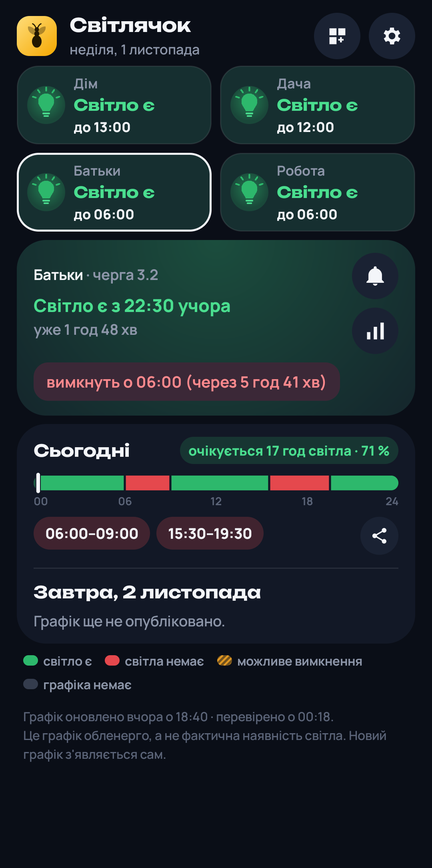
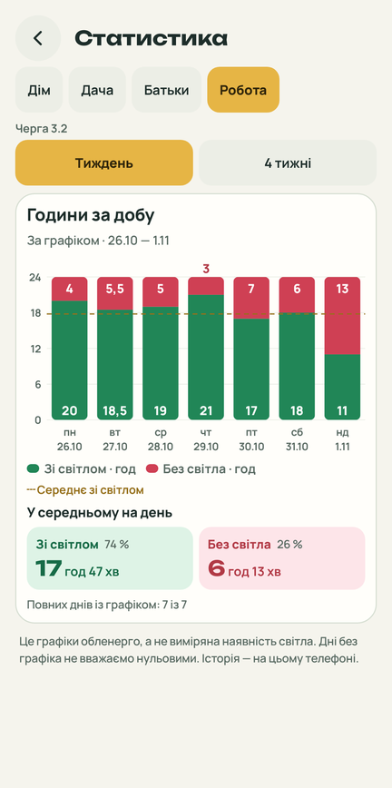
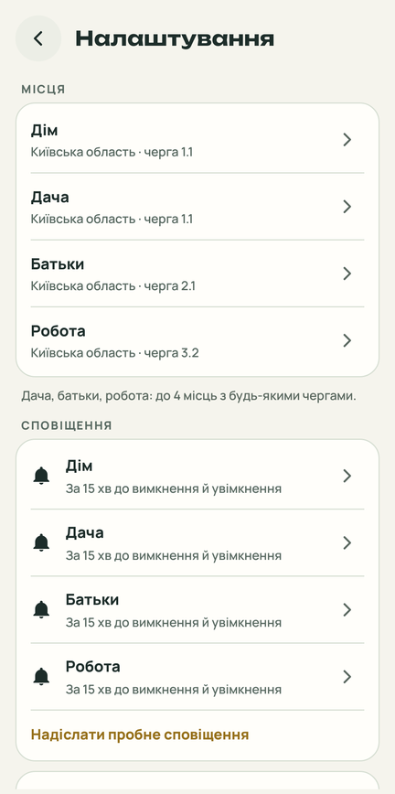
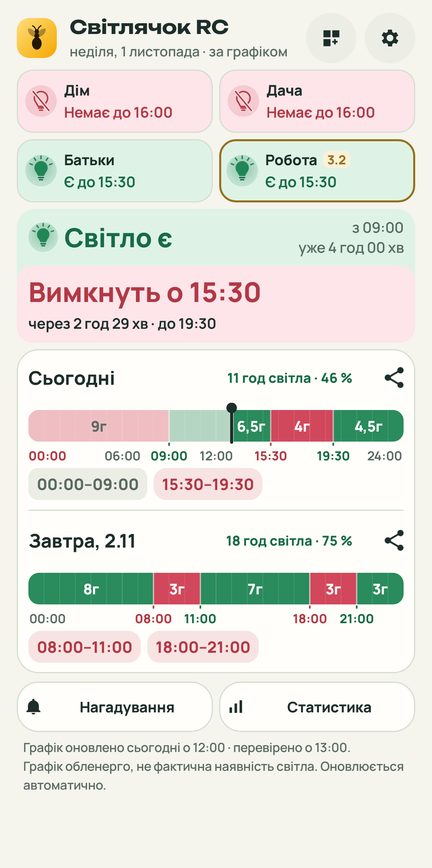

Світлячок › Області › Хмельницька
Графік відключень світла: Хмельницька область
Світлячок показує графік погодинних відключень Хмельницької області для вашої черги: чи є світло зараз, до котрої години й що буде завтра. Перед вимкненням і ввімкненням приходить нагадування.
Завантажити для AndroidВідкрийте цю сторінку на телефоні, щоб встановити застосунок.




Звідки графік
Графік Хмельницької області публікує Хмельницькобленерго. Світлячок бере його з відкритого архіву на GitHub (yaroslav2901/OE_OUTAGE_DATA), який збирає графіки із сайтів обленерго. Застосунок перевіряє оновлення приблизно раз на 15 хвилин.
Після встановлення оберіть «Хмельницька область» і свою чергу. Можна додати до 4 місць, зокрема з інших областей.
Що вміє
Графік вашої черги
Чи є світло зараз за графіком і відколи, коли вимкнуть або ввімкнуть і через скільки. Сьогодні й завтра — смуга на 24 години з годинами вимкнень.
Нагадування
За 15 хвилин до вимкнення і за 15 хвилин до ввімкнення світла. Час, тиша вночі й сповіщення про новий графік — у налаштуваннях кожного місця.
Віджет
Лампочка, стан і до котрої години — на головному екрані, без відкриття застосунку. Свій віджет для кожного місця.
Кілька місць
До 4 місць з будь-якими областями й чергами: дім, дача, батьки, робота.
Статистика
Скільки годин світла було щодня за тиждень або місяць і скільки в середньому.
Поділитися
Графік дня картинкою у Viber чи Telegram — для рідних, у яких немає застосунку.
Як встановити
- Натисніть «Завантажити для Android» на цій сторінці — завантажиться файл
Svitlyachok-…apk. - Відкрийте завантажений файл. Якщо телефон попросить, дозвольте браузеру встановлювати застосунки й натисніть «Встановити».
- Запустіть Світлячок, оберіть область, чергу й назву місця, дозвольте сповіщення.
Нові версії встановлюються з самого застосунку: про них повідомляє картка на головному екрані.
Приватність
- Застосунок нічого не надсилає з телефона. Місця, черги й налаштування зберігаються лише на ньому.
- Без облікового запису, реклами й аналітики.
- З мережі застосунок лише завантажує відкритий файл графіка вашої області й перевіряє, чи вийшла нова версія.